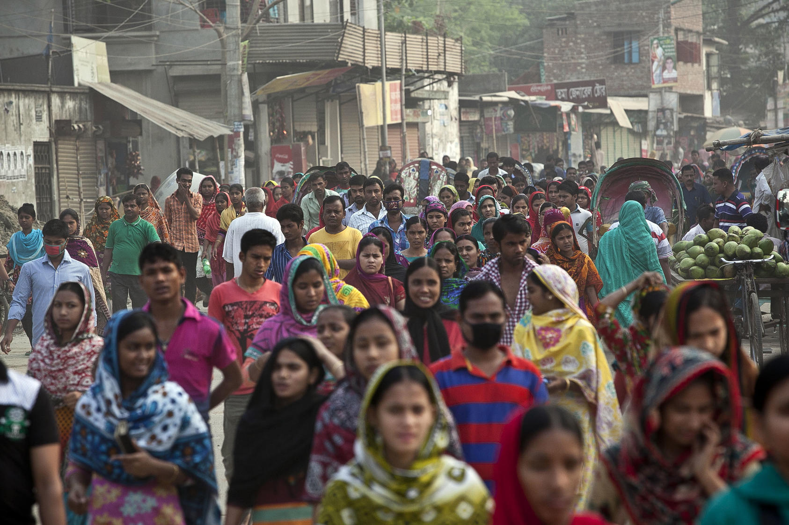
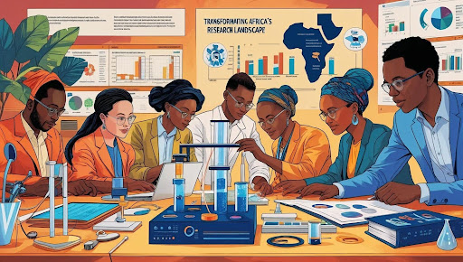
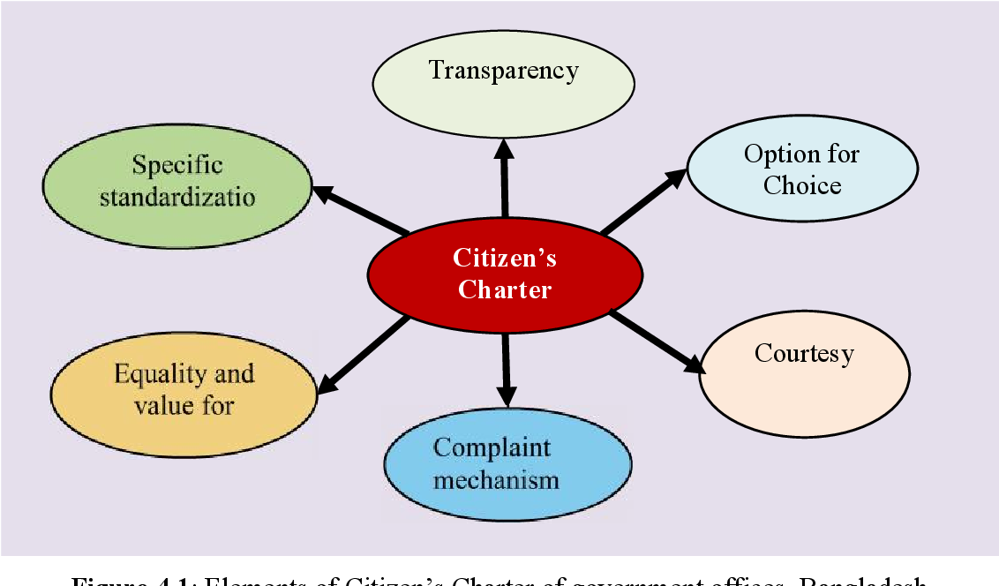
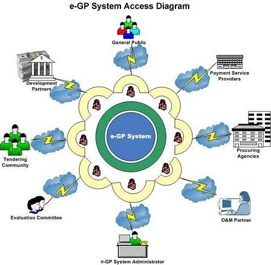
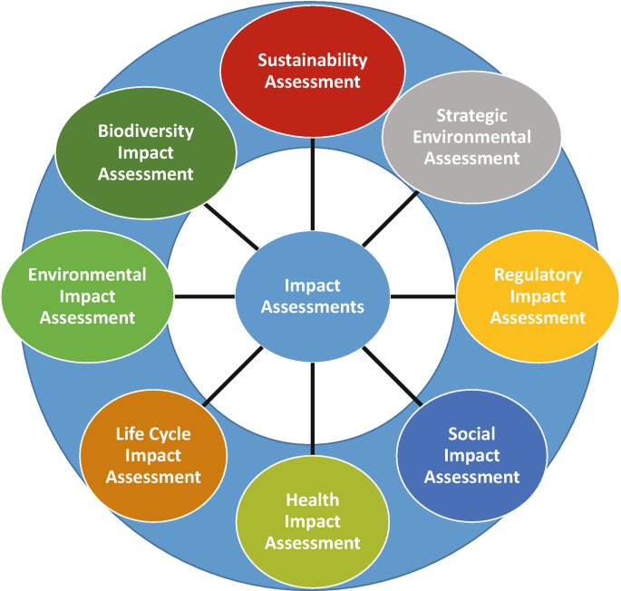
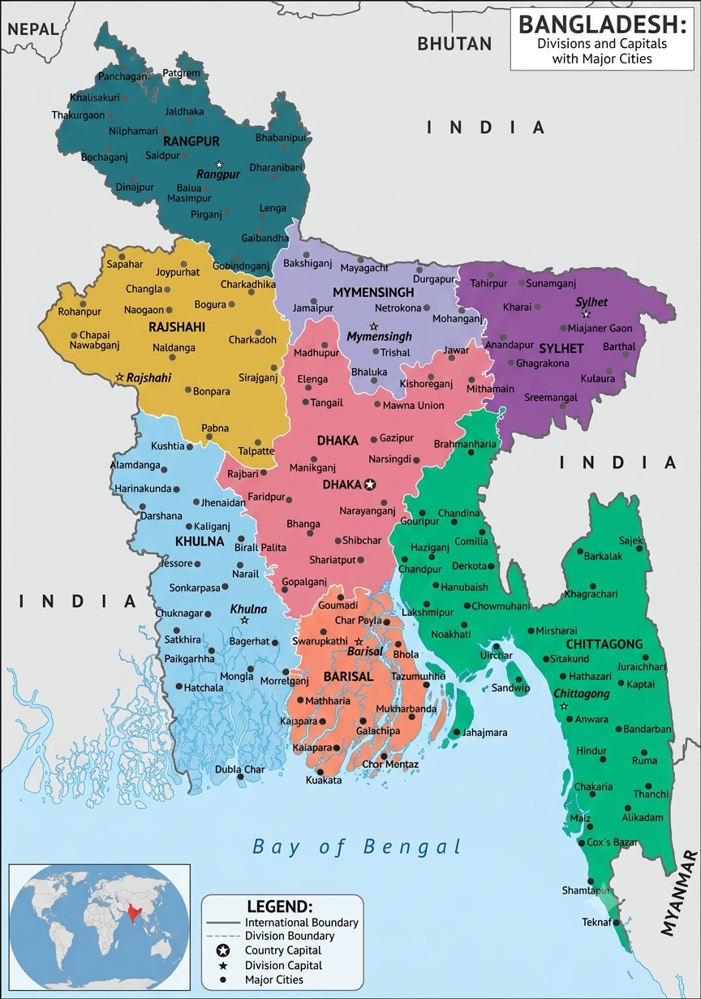

Data Management Aid

Providing evidence-based insights to strengthen institutional capacity and public accountability.
Quantitative and qualitative research supporting large-scale public sector reforms.
Conducting community-level perception surveys to measure local government service delivery.
Evaluating social safety net programs and public finance management accountability.
Our strong team of specialist consultants, field investigators and data analysts deliver precise baseline, midline, and endline evaluations.
With years of specialized experience, we deliver tailored research solutions in public policy monitoring, accountability tracking, and institutional capacity development. Our deep sector knowledge ensures high-quality data and compliance.
DMA conducted a comprehensive evaluation framework covering major Upazilas to track local policy implementation metrics and citizen satisfaction rates.
Data Accuracy & Verification Rate via GIS Mapping
A glimpse into our recent data management and research studies across Bangladesh.

Union Parishad Service Evaluation
Social Safety Net Monitoring

Government Line Department Analytics
Assessment of Union Digital Centers (UDC)
Public Disclosure & Transparency Tracking
Local Level Adaptation Fund Tracking
Women Participation in Local Decision Making
Public Complaint & Dispute Resolution Mapping

Service Delivery Commitments vs Reality
Pourashava Revenue & Citizen Service Mapping

Assessing Integrity and Open Data Metrics

National Decentralization Policy Tracking
Explore our completed and ongoing assignments across Bangladesh. Click on a district to view project information.

Click on any district from the Bangladesh map to view project details.